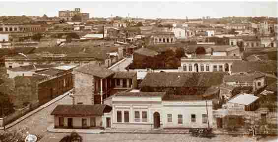

Las edificaciones que conforman la Manzana de la Rivera conjugan una arquitectura colonial, ecléctica, neoclásica, todas presentes en las construcciones paraguayas. Así se observa La casa Viola (siglo XVIII), Casa Clari, (siglo XX), Casa Clari Mestre (siglo XX), Casa Castelví (siglo XIX), Casa Vertúa (siglo XIX), Casa EMASA (siglo XX), Casa Serra 1 y 2 (siglo XIX), Casa Ballario (siglo XX).
En ocasión de los 500 años del descubrimiento de América, la Municipalidad de Asunción adquirió las propiedades que conforman el predio de la manzana de la Rivera. De esta manera se conformó la Comisión V Centenario que incluyó "La casa Viola" como uno de los proyectos principales a ejecutarse. Los trabajos de restauración se iniciaron en el año 1991. Al término de los trabajos se conforma el Centro Cultural de la ciudad.
La conformación del trazado de Asunción, presentaba una característica atípica en el continente, basada en cierto grado de "organicidad" medieval, aun cuando su esquema era disperso, no organizativo. Dos elementos condicionaron esta morfología de emplazamiento de la ciudad capital como: el suelo arenoso sujeto a inundaciones, fuertes lluvias con raudales. También, el incendio ocurrido en 1543, motivó la re edificación de la ciudad adoptando un sistema de trama abierta, que impidiera la propagación del fuego entre las viviendas.
En el año 1760, Félix de Azara, señala que las casas no tienen altura.
La rectificación realizada por el entonces Dr. Gaspar Rodríguez de Francia en los años 1821-1824, modificará la estructura urbanística de Asunción, pero, no modificará la relación entre el paisaje urbano y rural. La característica arquitectónica de esa época, se basaba en tecnología constructiva simple. Organizaciones espaciales también simples, galerías continuas que uniformaban el paisaje urbano de la época, y comunicaban el paisaje interior del inmueble con el paisaje exterior o calle.
En el año 1989, inician la campaña "Salvemos la manzana frente al Palacio" debido al deterioro de las edificaciones. En Asunción, durante la administración del Intendente José Luis Adler, la Municipalidad adquirió las propiedades. El escritor Augusto Roa Bastos lo presentó ante la Agencia Española de Cooperación Internacional de desarrollo. Los trabajos de restauración se iniciaron en el año 1991. Se conforma el Centro Cultural de la ciudad, siendo el primer director el Arquitecto Carlos Colombino. La segunda etapa de restauración de las demás edificaciones, se realiza en el año 1993.El Centro Cultural es una institución dependiente de la Dirección de Cultura y Turismo de la Municipalidad de Asunción.
Entre el período comprendido entre los años 1870 y 1936, aparece la Arquitectura de Fachada tapa, conjugada con la arquitectura colonial en el interior del inmueble.